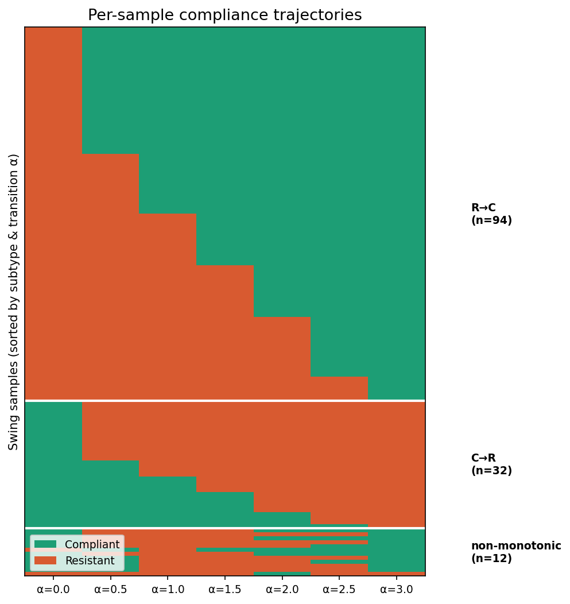
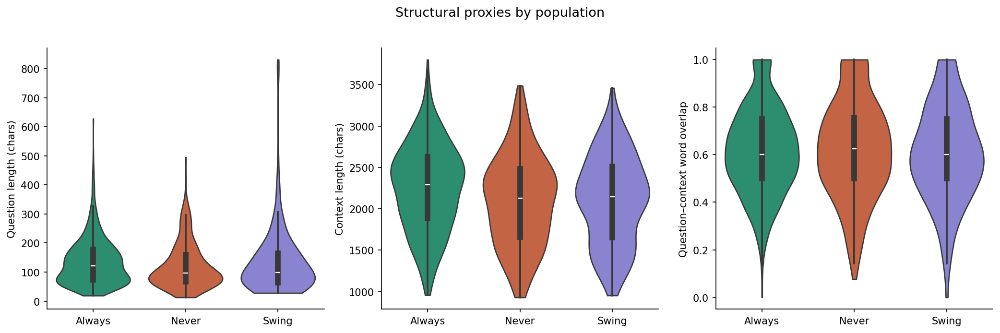

Of 1,000 FaithEval samples, only 138 respond to H-neuron scaling. This page profiles that sensitive subpopulation: what types of transitions occur, how much structural features predict swing status, and whether knowledge override or uncertainty resolution dominates.
Each swing sample follows one of three trajectory shapes across the α sweep. The dominant pattern is R→C: the model initially gives the correct answer but switches to following the misleading context as H-neuron scaling increases.
Each row is one swing sample, each column is an α value (0.0 to 3.0). Orange cells indicate resistant behavior, while green cells indicate compliance with misleading context. The dominant R→C pattern shows up as rows that transition from orange to green as α increases.

The transition α is the scaling factor at which a sample first changes compliance state. These bars are plotted from exported per-sample first-transition values, not reconstructed from summary means. Both monotonic subtypes concentrate in the first half of the sweep, and the current subtype timing difference remains inconclusive.
Held-out prediction on question structure, topic, and source does not support a strong structural separation claim on the current feature set. Descriptively, context length still differs across populations (p=0.0001) and source composition is imbalanced (V=0.20), but those effects need not imply useful classification.

Three independent LLM calls per sample classify the question's domain knowledge, verify the model's answer against the judge, and rate context persuasiveness. These ratings cross-check whether R→C samples genuinely represent knowledge override.